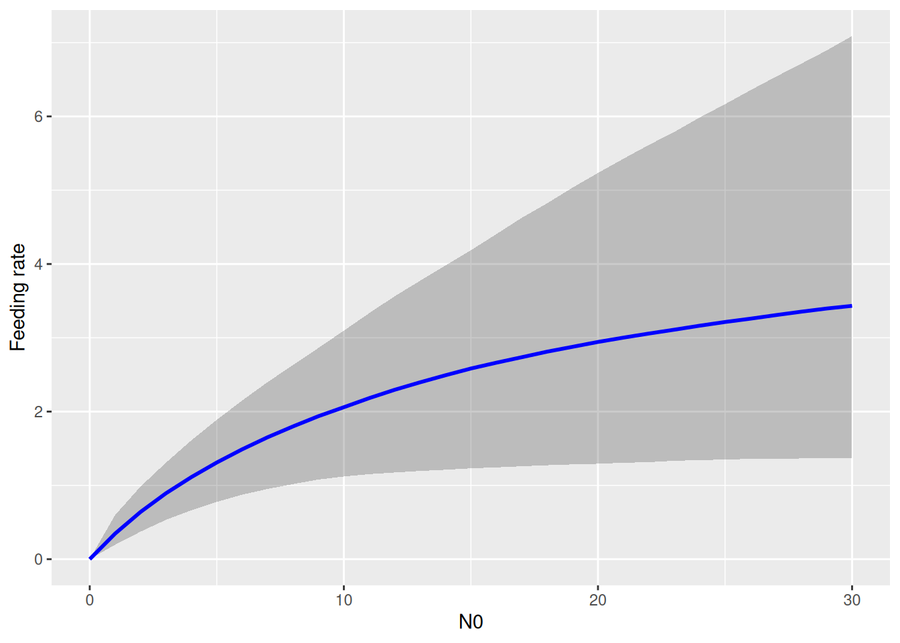

When prey die during an experiment due to other causes than predation, estimated feeding rates can be biased even when correcting for prey depletion with a dynamical prediction model. The number of available prey declines faster than predicted by feeding only. Instead, the number of available prey \(N(t)\) (i.e. not eaten and not dead) can be modelled with an additional, linear mortality term \[\frac{dN}{dt}=-F(N)P-mN\] where \(F(N)\) is a functional response describing per-capita feeding rate, \(P\) is predator number, and \(m\) is the prey’s mortality rate.
Statistically, it can be difficult to tease apart functional response parameters such as attack rate \(a\) and mortality rate \(m\), when only data from feeding trials are used. Parameter estimates tend to be correlated. As an extreme case, consider the linear type 1 FR \(F(N)=aN\). Here, it is impossible to distinguish between attack and mortality rate, as the model reduces to \(\frac{dN}{dt}=-(a+m)N\). Ideally, control treatments without predators are performed to estimate mortality rate. For \(P=0\), the prediction model reduces to \[\frac{dN}{dt}=-mN\] We are able to fit both the predator and the control treatment data in one joint statistical model. Here, the function Type3GenH_mort_dyn(N0,P0,Time,b,h,q,m) includes a generalized type 3 FR with mortality term \[\frac{dN}{dt}=-\frac{bN^{1+q}}{1+bhN^{1+q}} P-mN\] It predicts the number or eaten or dead prey \(\hat{N}_E=N_0-N_T\). A column \(P_0\) for predator number (\(P_0=0\) for control, \(P_0>0\) for predator treatments) is required in the dataframe. This model also includes the type 2 and type 3 FRs by fixing the exponent \(q\) at 0 Type3GenH_mort_dyn(N0,P0,Time,b,h,0,m) or at 1 Type3GenH_mort_dyn(N0,P0,Time,b,h,1,m), respectively. Because of the mortality term, neither of them has an analytical solution and model predictions are computed numerically.
We work with a dataset from Archer et al. (2019), downloaded from Dryad. It includes lab and field data from a stream system, with two different fly larvae predators feeding on blackfly larvae. Background mortality of prey was observed and control treatments without predators were performed. Number of dead / eaten prey was recorded (without distinction), dead / eaten prey were not replaced. Also includes a temperature gradient.
Minimal example
For introduction, a subset of the data is analyzed with laboratory data from a single temperature treatment and a single predator species.
A type 2 response is fitted (setting q=0.0) to both the predator and control treatments (column P0 identifies them) to estimate attack rate, handling time and mortality rate simultaneously.
Family: binomial
Links: mu = identity
Formula: NE | trials(N0) ~ Type3GenH_mort_dyn(N0, P0, 1, a, h, 0, m)/N0
a ~ 1
h ~ 1
m ~ 1
Data: df (Number of observations: 39)
Draws: 4 chains, each with iter = 2000; warmup = 1000; thin = 1;
total post-warmup draws = 4000
Regression Coefficients:
Estimate Est.Error l-95% CI u-95% CI Rhat Bulk_ESS Tail_ESS
a_Intercept 0.43 0.23 0.18 1.00 1.00 1471 1483
h_Intercept 0.25 0.23 0.01 0.86 1.00 1324 1175
m_Intercept 0.09 0.03 0.05 0.15 1.00 2036 1789
Draws were sampled using sampling(NUTS). For each parameter, Bulk_ESS
and Tail_ESS are effective sample size measures, and Rhat is the potential
scale reduction factor on split chains (at convergence, Rhat = 1).
Without the control treatments, we would expect a strong correlation in parameter estimates for, e.g., attack and mortality rate, with high uncertainty and potentially a bias. Here, with control data, we check the pairs plot of the posterior distribution and verify that this is not the case.
Note that the predator curve above makes predictions using the ODE \(\frac{dN}{dt}=-F(N)P-mN\) that include both the feeding rate and the mortality rate. Visualizing the functional response \(F(N)\) alone is not possible with conditional_effects. Here, we have to use posterior samples of attack rate and handling time to compute posterior samples of \(F(N)\) manually. For each posterior sample \((a_i,h_i)\), a feeding rate curve \(F(N)_i\) is computed, and summarized with median and upper and lower quantiles for plotting.
draws =as_draws_matrix(fit.1, variable=c("b_a_Intercept","b_h_Intercept"))a =c(draws[, 1])h =c(draws[, 2])N0 =0:30FR =matrix(NA, nrow=nrow(draws), ncol=length(N0))# each row is a functional response curve, each column is distribution for specific N0for(i in1:nrow(draws)){# compute FR formula manually FR[i, ] = a[i]*N0 / (1+a[i]*h[i]*N0)}# quantilesFR.qs =apply(FR, 2, function(x) quantile(x, probs=c(0.05,0.5,0.95)))df.plot =data.frame(N0 = N0,low = FR.qs[1,],med = FR.qs[2,],up = FR.qs[3,])ggplot(df.plot, aes(N0, med)) +geom_ribbon(aes(ymin = low, ymax = up), alpha =0.25) +geom_line(linewidth =1, col ="blue") +labs(y ="Feeding rate")

Continuous predictor
The dataset features a temperature gradient and the research question is if attack rates increase with temperature.
We can fit this dataset for one of the predators by making one or more parameters temperature dependent, e.g. by replacing a~1 by a~Temperature (and potentially using a log-link to guarantee positive attack rates) as described in Section 5. Archer et al. (2019) used a mechanistic model \[ a = \exp\left(a_0 + a_1 \frac{T-T_0}{kTT_0}\right)\] where \(k=8.62\cdot 10^{-5}\) is the Boltzmann constant, \(T[{\mathrm K}]\) is experimental temperature in Kelvin and \(T_0=283.15\mathrm{K}\) (\(=10^\circ{\mathrm C}\)) is the reference temperature. Free model parameters are \(a_0\) (normalization constant) and \(a_1\) (activation energy). This equation is coded explicitly using nlf(a~...). In this model, \(a\) is strictly positive and parameters \(a_0,a_1\) can be positive or negative, here we use normal priors. Same scaling applies to \(h\) and \(m\).
Family: binomial
Links: mu = identity
Formula: NE | trials(N0) ~ Type3GenH_mort_dyn(N0, P0, 1, a, h, 0, m)/N0
a ~ exp(a0 + a1 * (Temperature - 10)/(8.62 * 10^(-5) * (Temperature + 273.15) * 283.15))
h ~ exp(h0 + h1 * (Temperature - 10)/(8.62 * 10^(-5) * (Temperature + 273.15) * 283.15))
m ~ exp(m0 + m1 * (Temperature - 10)/(8.62 * 10^(-5) * (Temperature + 273.15) * 283.15))
a0 ~ 1
a1 ~ 1
h0 ~ 1
h1 ~ 1
m0 ~ 1
m1 ~ 1
Data: df (Number of observations: 287)
Draws: 4 chains, each with iter = 2000; warmup = 1000; thin = 1;
total post-warmup draws = 4000
Regression Coefficients:
Estimate Est.Error l-95% CI u-95% CI Rhat Bulk_ESS Tail_ESS
a0_Intercept -0.94 0.21 -1.32 -0.53 1.00 1423 2069
a1_Intercept 0.40 0.20 -0.01 0.80 1.00 2461 2345
h0_Intercept -2.56 1.10 -5.64 -1.35 1.00 1447 1271
h1_Intercept -0.35 0.55 -1.44 0.81 1.00 2851 2053
m0_Intercept -1.86 0.07 -2.01 -1.72 1.00 3062 2518
m1_Intercept 0.68 0.10 0.49 0.87 1.00 2579 2532
Draws were sampled using sampling(NUTS). For each parameter, Bulk_ESS
and Tail_ESS are effective sample size measures, and Rhat is the potential
scale reduction factor on split chains (at convergence, Rhat = 1).
We observe a positive temperature scaling for \(m\) (~2/3 power law) and potentially for \(a\) too (although 95% CI covers 0), while the model is indecisive regarding \(h\) (high uncertainty and CI covering 0). Scaling of any parameter defined in the model formula nlf(...) can be visualized with conditional_effects().
To answer the research question, the hypothesis function is used to compute the posterior probability \(P(a_1>0)=0.97\), meaning we are sufficiently certain that attack rates increase with temperature.
hypothesis(fit.2, "a1_Intercept>0")
Hypothesis Tests for class b:
Hypothesis Estimate Est.Error CI.Lower CI.Upper Evid.Ratio Post.Prob
1 (a1_Intercept) > 0 0.4 0.2 0.06 0.73 37.83 0.97
Star
1 *
---
'CI': 90%-CI for one-sided and 95%-CI for two-sided hypotheses.
'*': For one-sided hypotheses, the posterior probability exceeds 95%;
for two-sided hypotheses, the value tested against lies outside the 95%-CI.
Posterior probabilities of point hypotheses assume equal prior probabilities.
Again, we plot plot regression curves against the data separately for predator and control treatments using conditions. Specifying effects="N0:Temperature" automatically chooses 3 levels of temperature (mean, +1 sd, -1sd).
As in the minimal example above, conditional_effects does not plot the actual feeding rates. We compute regression curves manually for 3 temperature levels. Again, we geta posterior distribution of regression curves, which is summarized by medians and quantiles.
So far, we ignored an important feature of the dataset, which includes both laboratory and field experiments. This is encoded in the factorial predictor Setting. Here, we can easily include this in the mechanistical temperature model by making the normalization constants (intercepts) setting-dependent (we assume that the scaling is independent of the setting, though). Note that the formula a0~Setting would use dummy-coding and we use a0~0+Setting here, which estimates 2 separate parameters a0 for lab and field. We are interested if attack rates increase with temperature while we acknowledge different baselines for all parameters depending on the setting.
Family: binomial
Links: mu = identity
Formula: NE | trials(N0) ~ Type3GenH_mort_dyn(N0, P0, 1, a, h, 0, m)/N0
a ~ exp(a0 + a1 * (Temperature - 10)/(8.62 * 10^(-5) * (Temperature + 273.15) * 283.15))
h ~ exp(h0 + h1 * (Temperature - 10)/(8.62 * 10^(-5) * (Temperature + 273.15) * 283.15))
m ~ exp(m0 + m1 * (Temperature - 10)/(8.62 * 10^(-5) * (Temperature + 273.15) * 283.15))
a0 ~ 0 + Setting
h0 ~ 0 + Setting
m0 ~ 0 + Setting
a1 ~ 1
h1 ~ 1
m1 ~ 1
Data: df (Number of observations: 287)
Draws: 4 chains, each with iter = 2000; warmup = 1000; thin = 1;
total post-warmup draws = 4000
Regression Coefficients:
Estimate Est.Error l-95% CI u-95% CI Rhat Bulk_ESS
a0_Settingfield -0.56 0.39 -1.31 0.23 1.00 2336
a0_Settinglaboratory -1.09 0.21 -1.54 -0.66 1.00 2492
h0_Settingfield -1.33 0.68 -3.02 -0.39 1.00 2357
h0_Settinglaboratory -4.14 1.65 -7.96 -1.58 1.00 2334
m0_Settingfield -2.09 0.11 -2.31 -1.89 1.00 3401
m0_Settinglaboratory -1.55 0.11 -1.77 -1.34 1.00 3174
a1_Intercept 0.56 0.27 -0.04 1.02 1.00 2466
h1_Intercept 0.04 0.42 -0.82 0.90 1.00 2528
m1_Intercept 0.83 0.11 0.62 1.04 1.00 2838
Tail_ESS
a0_Settingfield 1370
a0_Settinglaboratory 2219
h0_Settingfield 1195
h0_Settinglaboratory 2413
m0_Settingfield 2774
m0_Settinglaboratory 2592
a1_Intercept 2143
h1_Intercept 1899
m1_Intercept 2987
Draws were sampled using sampling(NUTS). For each parameter, Bulk_ESS
and Tail_ESS are effective sample size measures, and Rhat is the potential
scale reduction factor on split chains (at convergence, Rhat = 1).
Again, there is a positive effect of temperature on attack rates, which we will quantify with hypothesis() below. Here, handling times don’t seem to be affected by temperature, and we could think of re-fitting the model without this effect (and dropping parameter \(h_1\)).
We answer the research question: yes, attack rates increase with temperature, \(P(a_1>0)=0.97\).
hypothesis(fit.3, "a1_Intercept>0")
Hypothesis Tests for class b:
Hypothesis Estimate Est.Error CI.Lower CI.Upper Evid.Ratio Post.Prob
1 (a1_Intercept) > 0 0.56 0.27 0.07 0.96 29.53 0.97
Star
1 *
---
'CI': 90%-CI for one-sided and 95%-CI for two-sided hypotheses.
'*': For one-sided hypotheses, the posterior probability exceeds 95%;
for two-sided hypotheses, the value tested against lies outside the 95%-CI.
Posterior probabilities of point hypotheses assume equal prior probabilities.
Using LOO for model comparison, we only find very weak evidence that including the setting actually improves the model. Since this was not the main research question we don’t investigate this further.
LOO(fit.2, fit.3)
model elpd_diff se_diff p_worse diag_diff diag_elpd
fit.3 0.0 0.0 NA 1 k_psis > 0.7
fit.2 -10.1 8.1 0.89